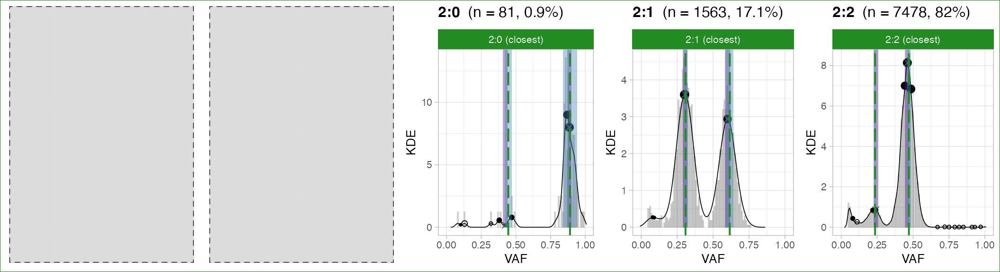
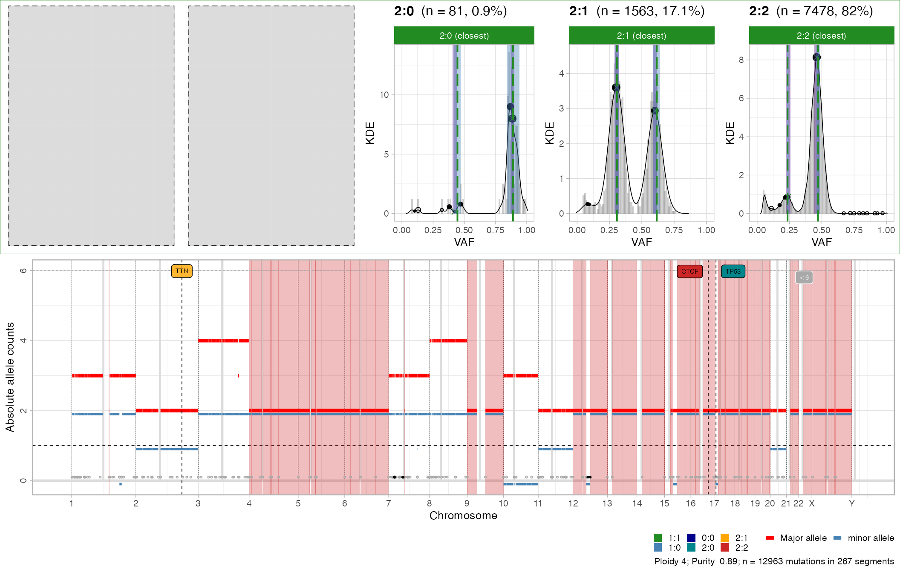
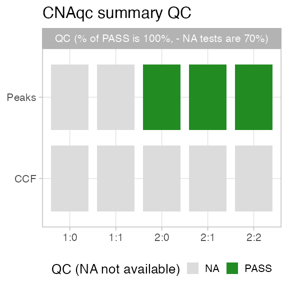

CNAqc can determine if purity and CNA segments “fit well” to mutation data, an hortogonal quality check (QC) metric that can be used to adjust purity/ ploidy.
CNAqc matches allelic imbalance of CNA segments to the allelic frequencies of somatic mutations. The package implements a karyotype-weighted linear score which uses the distance between data peaks (empirical), and their theoretical expectation. This score accouts for normal plodiy (germline), and tumour purity/ ploidy. The peaks are determined via kernel density estimation and peak-detection heuristics.
library(CNAqc)
#> Warning: replacing previous import 'cli::num_ansi_colors' by
#> 'crayon::num_ansi_colors' when loading 'BMix'
#> Warning: replacing previous import 'crayon::%+%' by 'ggplot2::%+%' when loading
#> 'BMix'
#> ✔ Loading BMix, 'Binomial and Beta-Binomial univariate mixtures'. Support : <https://caravagnalab.github.io/BMix/>
#> ✔ Loading CNAqc, 'Copy Number Alteration quality check'. Support : <https://caravagn.github.io/CNAqc/>We work with the template dataset.
#> [ CNAqc - CNA Quality Check ]
#>
#> 2:2 [n = 7478, L = 1483 Mb] ■■■■■■■■■■■■■■■■■■■■■■■■■■■ { CTCF }
#> 4:2 [n = 1893, L = 331 Mb] ■■■■■■■
#> 3:2 [n = 1625, L = 357 Mb] ■■■■■■
#> 2:1 [n = 1563, L = 420 Mb] ■■■■■■ { TTN }
#> 3:0 [n = 312, L = 137 Mb] ■
#> 2:0 [n = 81, L = 39 Mb] { TP53 }
#> 16:2 [n = 4, L = 0 Mb]
#> 25:2 [n = 2, L = 1 Mb]
#> 3:1 [n = 2, L = 1 Mb]
#> 106:1 [n = 1, L = 0 Mb]
#> 26:2 [n = 1, L = 0 Mb]
#> 99:1 [n = 1, L = 0 Mb]Peak detection routines are implemented in function analyze_peaks.
The idea is as follows: a segment with \(m\) and \(M\) copies of the minor and major alleles is consistent to mutation data if the VAF distribution peaks at certain values, which we can compute. Profiling then of the VAF distribution with a peak-detection heuristic allows CNAqc to measure the if peaks match. Large deviance suggests usually wrong purity estimation.
# Run default analysis
x = analyze_peaks(x)
#> ℹ Requested karyotypes 1:0, 1:1, 2:1, 2:0, and 2:2. Matching strategy closest.
#> ℹ Found n = 9122 mutations in 2:2, 2:1, 2:0 (skipping those with n < 0 mutations).
#> [ BMix fit ]
#> ℹ Binomials k_B = 1, 2, 3, and 4, Beta-Binomials k_BB = 0.
#> ✔ Fits to run, n = 8.
#> ℹ Bmix best fit completed in 0.04 mins
#> ── [ BMix ] My BMix model n = 1563 with k = 3 component(s) (3 + 0) ─────────────
#> ● Clusters: π = 53% [Bin 2], 43% [Bin 1], and 4% [Bin 3], with π > 0.
#> ● Binomial Bin 1 with mean = 0.601414994449281.
#> ● Binomial Bin 2 with mean = 0.305589888246352.
#> ● Binomial Bin 3 with mean = 0.0960566837900316.
#> ℹ Score(s): ICL = 12241.07.
#> [ BMix fit ]
#> ℹ Binomials k_B = 1, 2, 3, and 4, Beta-Binomials k_BB = 0.
#> ✔ Fits to run, n = 8.
#> ℹ Bmix best fit completed in 0 mins
#> ── [ BMix ] My BMix model n = 81 with k = 3 component(s) (3 + 0) ───────────────
#> ● Clusters: π = 89% [Bin 3], 9% [Bin 1], and 2% [Bin 2], with π > 0.
#> ● Binomial Bin 1 with mean = 0.422638818903902.
#> ● Binomial Bin 2 with mean = 0.100774106539128.
#> ● Binomial Bin 3 with mean = 0.88592870546594.
#> ℹ Score(s): ICL = 512.28.
#> [ BMix fit ]
#> ℹ Binomials k_B = 1, 2, 3, and 4, Beta-Binomials k_BB = 0.
#> ✔ Fits to run, n = 8.
#> ℹ Bmix best fit completed in 0.22 mins
#> ── [ BMix ] My BMix model n = 7478 with k = 4 component(s) (4 + 0) ─────────────
#> ● Clusters: π = 48% [Bin 1], 39% [Bin 3], 9% [Bin 4], and 5% [Bin 2], with π >
#> 0.
#> ● Binomial Bin 1 with mean = 0.440783100017222.
#> ● Binomial Bin 2 with mean = 0.0776183617848511.
#> ● Binomial Bin 3 with mean = 0.488475541938604.
#> ● Binomial Bin 4 with mean = 0.227270208222804.
#> ℹ Score(s): ICL = 59325.34.
#> # A tibble: 6 x 12
#> mutation_multip… karyotype peak x y counts_per_bin discarded offset
#> <dbl> <chr> <dbl> <dbl> <dbl> <int> <lgl> <dbl>
#> 1 1 2:1 0.308 0.306 3.60 59 FALSE 0.00245
#> 2 2 2:1 0.616 0.602 2.94 60 FALSE 0.0138
#> 3 1 2:0 0.445 0.423 0.172 0 FALSE 0.0215
#> 4 2 2:0 0.89 0.885 7.99 7 FALSE 0.00476
#> 5 1 2:2 0.235 0.24 0.86 65 FALSE -0.00455
#> 6 2 2:2 0.471 0.46 8.14 625 FALSE 0.0109
#> # … with 4 more variables: matched <lgl>, weight <dbl>, score <dbl>, QC <chr>
#> ✔ Peak detection PASS with r = 0.0041148739213522 and tolerance e = 0.06CNAqc analyze LOH regions (A, AA), diploid regions (AB), and amplification regions (AAB, AABB). These correspond to '1:1', '2:1', '2:0' and '2:2' in “Major:minor” notation. Karyotypes are subset by their size (normalized for the number of input mutations), and by default karyotypes smaller than 5% of the actual mutational burden are not considered
A Kernel-density method (unitary adjustment, Gaussian kernel) is used to smooth the data distribution, and the peakPick: Peak Picking Methods Inspired by Biological Data package is used to determine peaks in the smoothed density. Peaks below a mnimum density (noise and miscalled segments) are filtered, and the others are matched to a predefined location with some tolerance (e.g., plus/minus 0.5 * epsilon, where epsilon = 0.015 is the default).
Theis analysis produces a set of scores that account for karyotype size and peaks offset, and that can be combined into a linear model to compute an overall QC metrics, called rho.
print(x)
#> ── [ CNAqc ] n = 12963 mutations in 267 segments (267 clonal + 0 subclonal). Ge
#>
#> 2:2 [n = 7478, L = 1483 Mb] ■■■■■■■■■■■■■■■■■■■■■■■■■■■ { CTCF }
#> 4:2 [n = 1893, L = 331 Mb] ■■■■■■■
#> 3:2 [n = 1625, L = 357 Mb] ■■■■■■
#> 2:1 [n = 1563, L = 420 Mb] ■■■■■■ { TTN }
#> 3:0 [n = 312, L = 137 Mb] ■
#> 2:0 [n = 81, L = 39 Mb] { TP53 }
#> 16:2 [n = 4, L = 0 Mb]
#> 25:2 [n = 2, L = 1 Mb]
#> 3:1 [n = 2, L = 1 Mb]
#> 106:1 [n = 1, L = 0 Mb]
#> 26:2 [n = 1, L = 0 Mb]
#> 99:1 [n = 1, L = 0 Mb]
#> ℹ Sample Purity: 89% ~ Ploidy: 4.
#>
#> ── PASS Peaks QC closest: % 100 with q = 0.0041148739213522
#> ℹ 2:1 ~ n = 1563 (17%) → PASS 0.002 PASS 0.014
#> ℹ 2:0 ~ n = 81 ( 1%) → PASS 0.022 PASS 0.005
#> ℹ 2:2 ~ n = 7478 (82%) → PASS -0.005 PASS 0.011A summary table is stored inside the named list peaks_analysis.
For every karyotype, a plot with the estimated KDE and the matched peaks is available (assembled ggpubr figure with); gray panels represent karyotypes that have not been used.

Individual karyotypes plots are available inside the named lists peaks_analysis$plots, named afte each required karyotype.
# Tetraploid segments
x$peaks_analysis$plots$`2:2`
#> NULLYou can integrate plots from QC analysis with data.
cowplot::plot_grid(
plot_peaks_analysis(x),
plot_segments(x),
rel_heights = c(.8, 1),
nrow = 2
)
#> Scale for 'fill' is already present. Adding another scale for 'fill', which
#> will replace the existing scale.
The summary technical table is available as peaks_analysis$matches inside x.
x$peaks_analysis$matches
#> # A tibble: 6 x 12
#> mutation_multip… karyotype peak x y counts_per_bin discarded offset
#> <dbl> <chr> <dbl> <dbl> <dbl> <int> <lgl> <dbl>
#> 1 1 2:1 0.308 0.306 3.60 59 FALSE 0.00245
#> 2 2 2:1 0.616 0.602 2.94 60 FALSE 0.0138
#> 3 1 2:0 0.445 0.423 0.172 0 FALSE 0.0215
#> 4 2 2:0 0.89 0.885 7.99 7 FALSE 0.00476
#> 5 1 2:2 0.235 0.24 0.86 65 FALSE -0.00455
#> 6 2 2:2 0.471 0.46 8.14 625 FALSE 0.0109
#> # … with 4 more variables: matched <lgl>, weight <dbl>, score <dbl>, QC <chr>The table reports several information. The following might be of some use after the analysis:
mutation_multiplicity and karyotype, which are the number of copies of the mutation, and the segment’s karyotype. Each segment with discarded = FALSE has been analysed;peak, x, y report where the expected peak should be found, and where it has been found (x and y);offset, weight and score that report the factors of the final score;QC that reports if the peak is considered matched.The overall QC result - "PASS"/"FAIL" - is available in x.
x$peaks_analysis$QC
#> [1] "PASS"You can visually summarise the result of the QC analysis, for both peaks and CCF computation.
plot_qc(x)
Here since CCF have not been computed, the only available QC tests are for peak-detection.